Getting Started: Installing R and RStudio
Installation Tutorial
R and RStudio are two different programs that work together. R is the programming language and RStudio is a front end program that lets you write R code, view plots, etc.
To understand the difference, think of the relationship between a car’s engine and its dashboard:
R is the Engine: It is the powerful machine under the hood. It does all the heavy lifting, makes the car move, and handles the energy. But on its own, an engine is just a block of metal on the floor—you can’t sit in it or steer it easily.
RStudio is the Dashboard: It’s the steering wheel, the seats, the GPS, and the speedometer. It’s the beautiful interface that lets you interact with the engine so you can actually drive where you want to go.
Key Takeaway: Each program must be downloaded separately. You need to install both programs on your computer, but you will only ever “open” RStudio to do your work.
1. Install R and RStudio for Mac
1.1 Install R
a) To install R, go to cran.r-project.org.
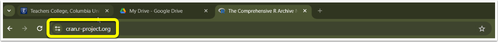
b) Click Download R for (Mac) OS X.
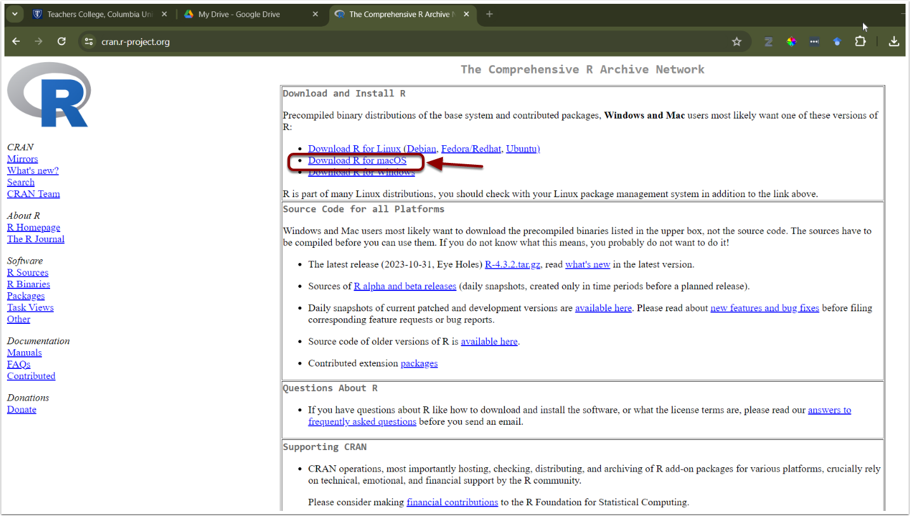
c) Check the Latest release: section for the appropriate version and follow the directions for download.
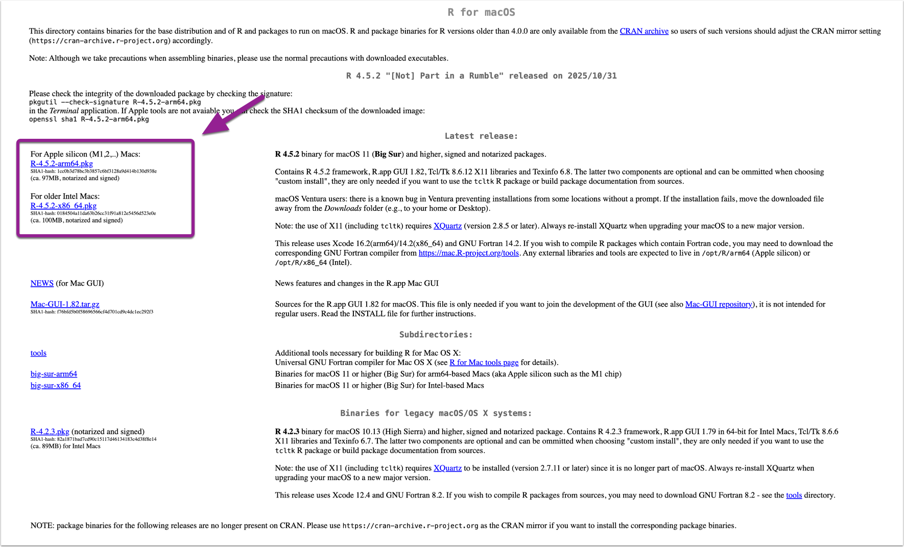
To ensure you download the correct version of R, you need to check which processor your Mac uses:
Click the Apple menu () in the top-left corner of your screen and select About This Mac.
In the window that appears, look for the Chip or Processor section:
Apple Silicon: If you see “Chip” followed by M1, M2, or M3, download the version for Apple silicon Macs.
Intel: If you see “Processor” followed by Intel Core i5 or i7, download the version for Older Intel Macs.
Note: The appearance of this window may vary depending on your macOS version, but the chip information will always be listed there.
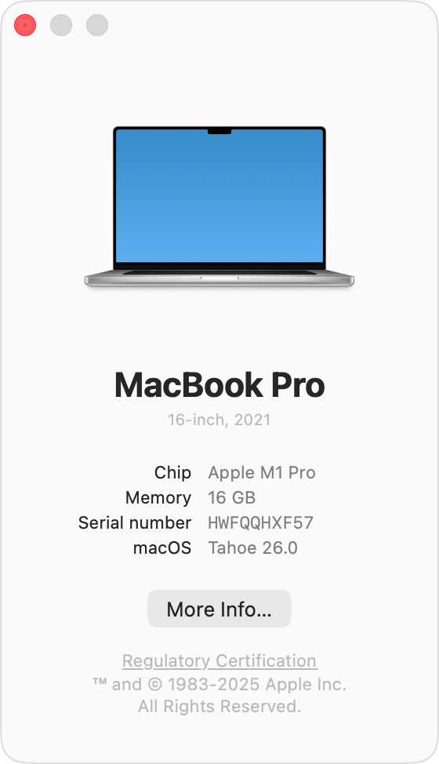
d) Once the file download is complete, click to open the installer in your Downloads folder. Click Continue and proceed through the installer.

e) Once the R installer has finished, click Close.

1.2 Install R Studio
a) Next, download RStudio. Go to https://posit.co/downloads/
b) Click Download RStudio.
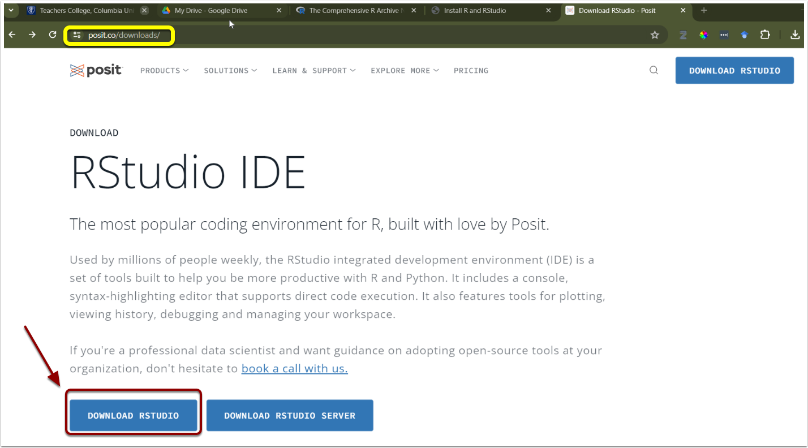
c) Select the RStudio version compatible with your macOS.
Note: If you are using macOS 13 (Ventura) or earlier, you may be redirected to an older version of RStudio that is optimized for your specific operating system.
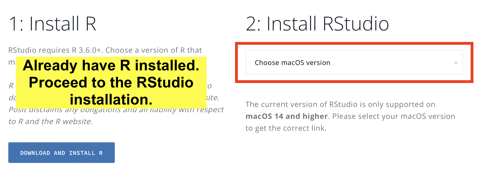
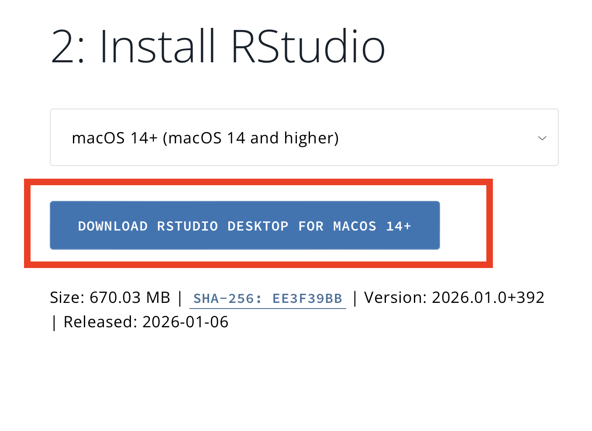
To ensure you download the correct version of R, you need to check which processor your Mac uses:
Click the Apple menu () in the top-left corner of your screen and select About This Mac.
In the window that appears, look for the macOS section:
The number following the macOS name is your version number.
Example: If your screen shows macOS Tahoe 25.0 (as seen in the figure below), your version is 25.
Action: In this case, you should choose the download option
macOS 14+ (macOS 14 and higher).
d) Once the file download is complete, click to open the installer. Drag RStudio into your applications folder.
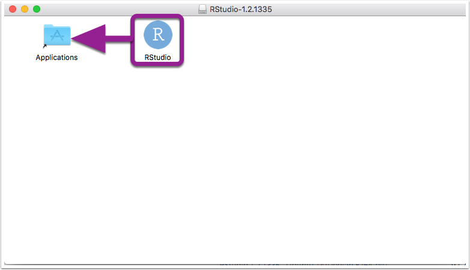
e) Once the installation is complete, R and RStudio will open.
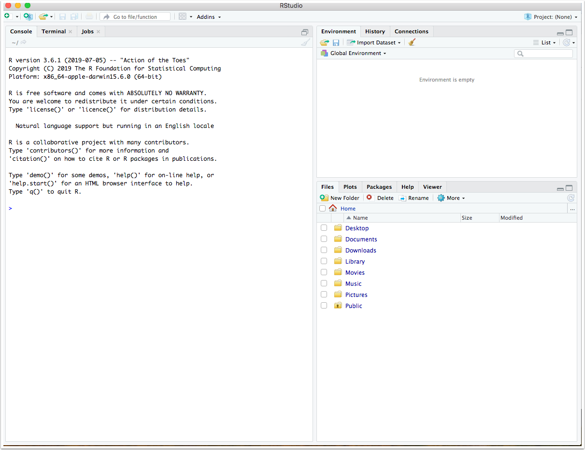
2. Install R and RStudio for Windows
2.1 Install R
a) To install R, go to cran.r-project.org.
b) Choose for Download R for Windows.
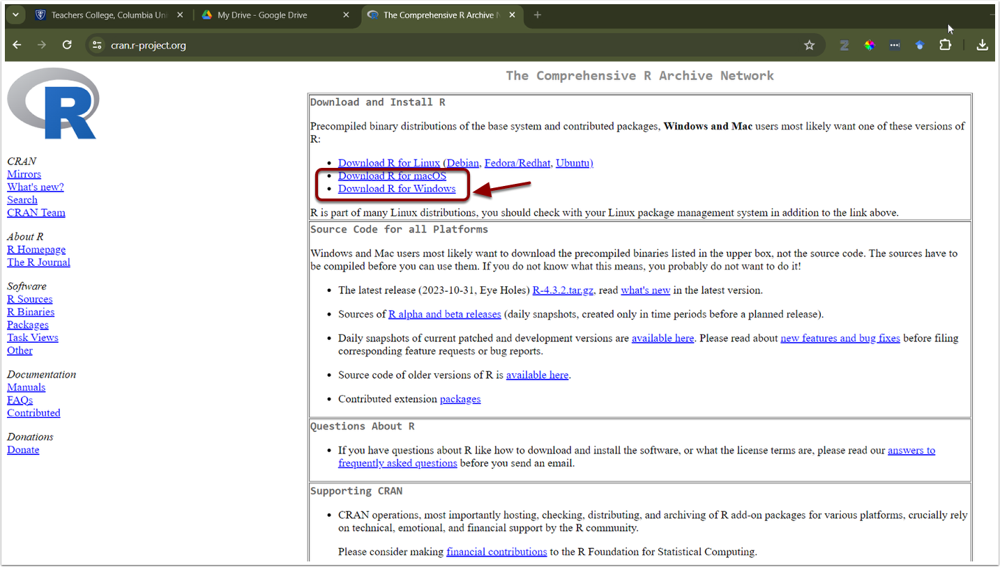
c) Install R Click on install R for the first time.
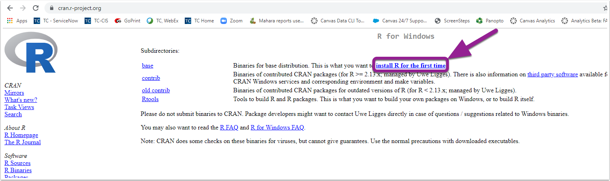
d) Click Download R for Windows. Open the downloaded file.
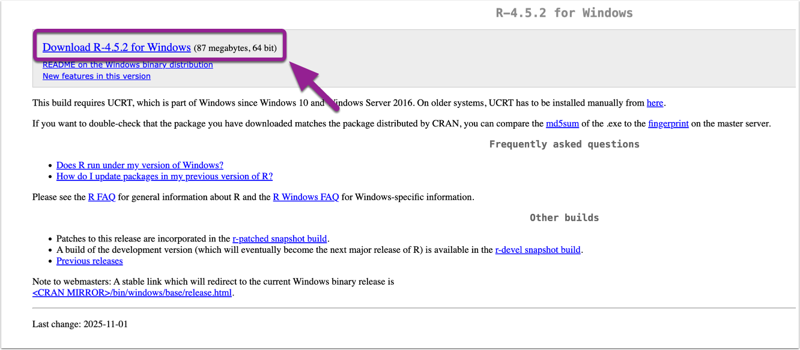
e) Select the language you would like to use during the installation. Then click OK.

While RStudio supports multiple languages, I highly recommend setting your environment to English. Here is why:
Easier Troubleshooting: Most R documentation, forums, and Stack Overflow solutions are in English. When you encounter an error message, it is much easier to “Google” the exact text to find a solution.
Encoding Issues: If you use non-alphabetic languages (like Mandarin), you may run into “text recognition” or encoding errors. This can result in “nonsense” characters (mojibake) in your console or error messages, making them impossible to read.
Consistency: Most R packages and functions are named using English verbs, so keeping your interface in the same language makes the logic flow more naturally.
Don’t worry if you’ve already chosen another language. You can usually change these settings later in the RStudio Global Options. In the absolute worst-case scenario, you can simply reinstall R, but for now, feel free to proceed with whichever language you are most comfortable with!
f) Click Next.
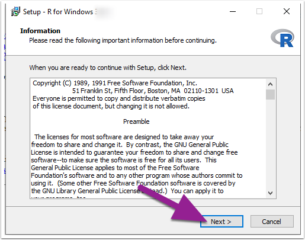
g) Select where you would like R to be installed. It will default to your Program Files on your C Drive. Click Next.
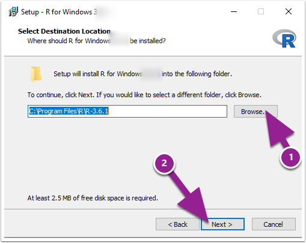
h) You can then choose which installation you would like.
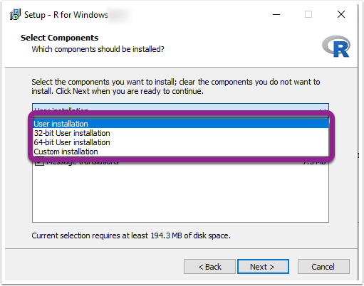
i) (Optional) If your computer is a 64-bit, you can choose the 64-bit User Installation. Then click Next.
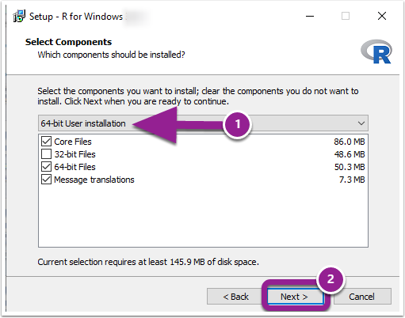
Most modern computers run the 64-bit version. Note that Windows 11 is 64-bit only, so if you have Windows 11, you are already set!
To confirm your system type on Windows 10 or 11:
Select the Start button and go to Settings > System > About.
Locate the Device specifications section.
Look next to System type:
64-bit operating system, x64-based processor: Choose the 64-bit download.
32-bit operating system, x86-based processor: Choose the 32-bit download (rare for newer machines).
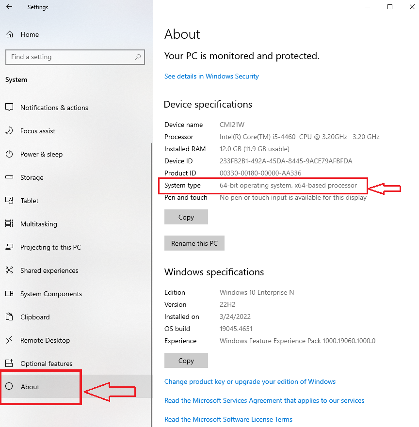
j) Then specify if you want to customized your startup or just use the defaults. Then click Next.
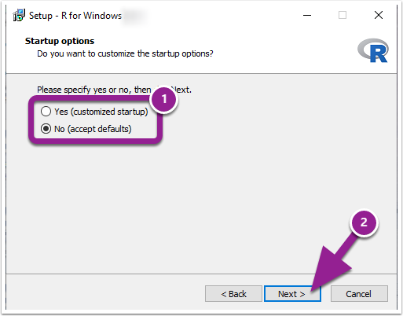
k) Then you can choose the folder that you want R to be saved within or the default if the R folder that was created. Once you have finished, click Next.
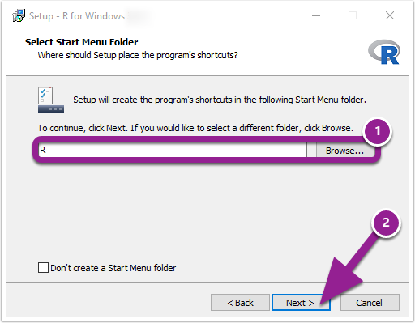
l) You can then select additional shortcuts if you would like. Click Next.
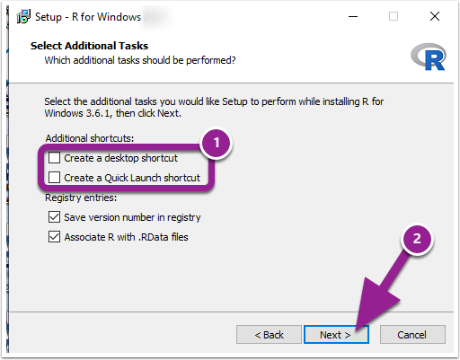
m) Click Finish.
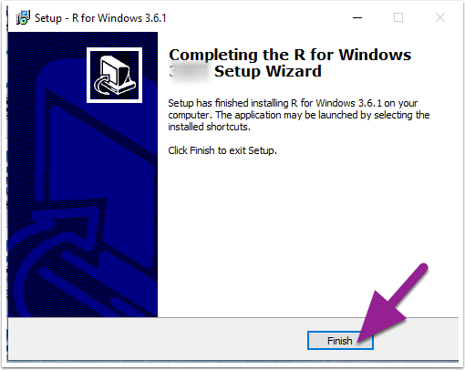
2.2 Install RStudio
a) Next, download RStudio. Go to https://posit.co/downloads/

b) Click Download RStudio.
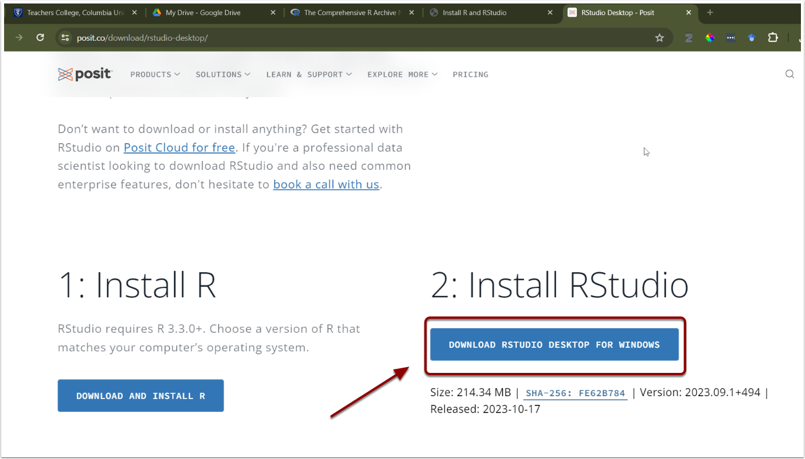
c) Once the packet has downloaded, the Welcome to RStudio Setup Wizard will open. Click Next and go through the installation steps.
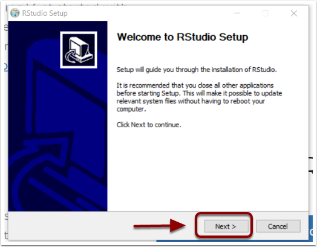
d) After the Setup Wizard finishing the installation, RStudio will open.
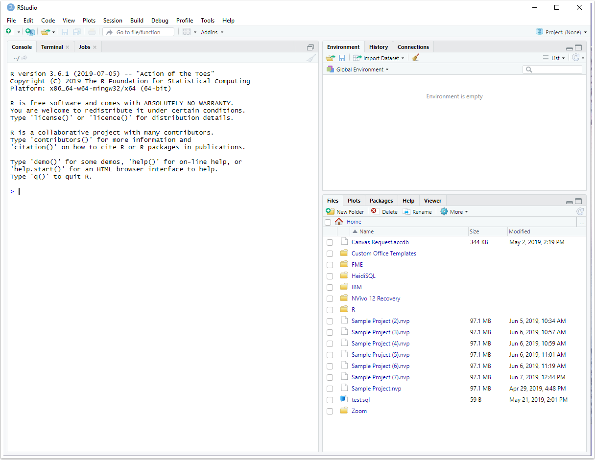
3. Notes
3.1 Language Recommendation: Why we suggest English
While RStudio supports multiple languages, I highly recommend setting your environment to English. Here is why:
Easier Troubleshooting: Most R documentation, forums, and Stack Overflow solutions are in English. When you encounter an error message, it is much easier to “Google” the exact text to find a solution.
Encoding Issues: If you use non-alphabetic languages (like Mandarin), you may run into “text recognition” or encoding errors. This can result in “nonsense” characters (mojibake) in your console or error messages, making them impossible to read.
Consistency: Most R packages and functions are named using English verbs, so keeping your interface in the same language makes the logic flow more naturally.
Don’t worry if you’ve already chosen another language. You can usually change these settings later in the RStudio Global Options. In the absolute worst-case scenario, you can simply reinstall R, but for now, feel free to proceed with whichever language you are most comfortable with!